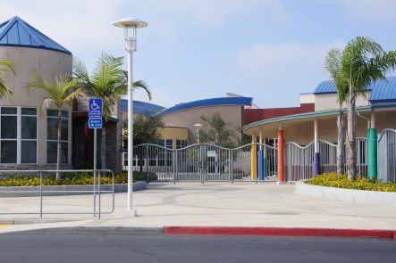

In 2006, riding a wave of economic and educational opportunities, my parents immigrated to the United States of America. As two twenty-somethings pursuing the American Dream, they landed in the Buckeye State, where I was born. From Ohio, we moved to Michigan in just a year, where I spent a couple months before returning to China, spending two years under my grandparents’ care. Afterwards, I returned, my earliest memories being in a University of Michigan preschool. From there, we moved to Boston, where I spent my first three years of elementary school playing in snow and running around the forest with my friends behind our school. At the end of 2nd grade, we moved our last time to San Diego.
In San Diego, the first school I attended was Ocean Air Elementary, where I chipped my tooth running a morning mile. After school I would attend After School Learning Tree, a Chinese after school program where I made most of my best friends, bonding over traumatic math classes and unnecessarily stressful table tennis sessions. My sixth grade year was interrupted right before we were supposed to go to sixth grade camp, as the Covid-19 pandemic forced us to stay home. In my room I got through my first year of real grades, and eventually returned to the classroom at Carmel Valley Middle School.

My freshman year of high school at Canyon Crest Academy was light, coursework was easy, I ate lunch with all my friends, and spent most of my time on extracurricular activities that I found fun rather than ones that felt forced. My sophomore year was when I faced my first crisis: AP Calculus BC. It was with calculus that I realized a pattern I would see throughout my more challenging classes at CCA, that the actual class would be much more difficult than the final AP test. This would continue to irk me, especially my junior year with AP Physics 1. Now, in my senior year, I have discovered the freedom of not caring too much about grades, focusing when I need to and relaxing when I can. I have been doing just fine, in fact better than I expected, so in retrospect, I don’t understand why I have been so stressed out these past few years.